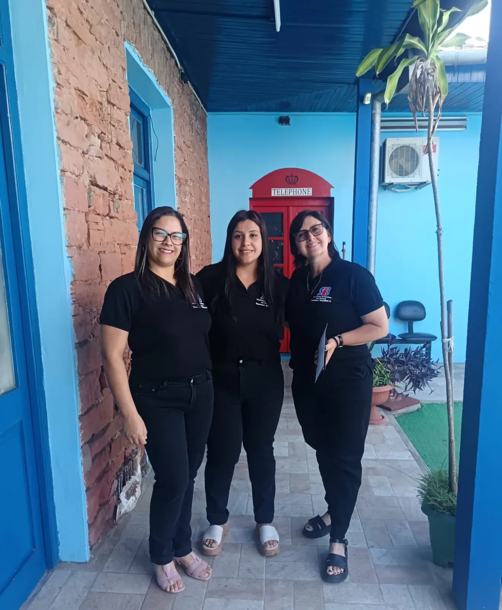

La puerta de la Casa Central, en Joaquín Suárez 543.
Bajá para pasar
Pasá.Del otro lado de la puerta, el patio.
Un aula para cada etapa.
Grupos armados por edad y nivel, con la misma teacher durante todo el año. Empezá por la edad de quien va a estudiar.
Kids
Desde los 4 años
Niveles Pre-A1 a A2
Los más chicos aprenden jugando: canciones, cuentos, proyectos y rutinas que hacen del inglés el mejor momento de la semana. La pronunciación se trabaja desde el primer día.
Un avance firme durante el liceo, con seguimiento por nivel y preparación gradual para el B2 First. Grupos de su misma edad, para que se animen a hablar.
Empezás desde cero o retomás donde lo dejaste. Horarios para quienes trabajan o estudian, formación intensiva si tenés apuro y también clases virtuales.
Los niveles siguen el Marco Común Europeo y cada uno cierra con un examen final del instituto. La edad define dónde empezás; la constancia, hasta dónde llegás.
Acá entra un chico de 4 años
Pre-A1Primeras palabras
A1Principiante
A2Elemental
B1Intermedio
B2Intermedio altoB2 First
C1AvanzadoC1 Advanced
C2MaestríaC2 Proficiency
Pre-A1 Primeras palabras
A1 Principiante
A2 Elemental
B1 Intermedio
B2 Intermedio alto
C1 Avanzado
C2 Maestría
Qué escalones recorre cada curso. Tocá uno para marcarlo en la escalera.
Quien empieza en Kids a los 4 años entra por Pre-A1. En Teens sigue hasta B2, el nivel del B2 First; después vienen C1 Advanced y C2 Proficiency.
Sí, tenemos una cabina roja en el patio.Pero mejor escribinos por WhatsApp.

Las teachers, frente a la cabina del patio.
Te ayudamos a elegir curso, nivel y horario. Atendemos de lunes a viernes, de 8:30 a 12 y de 14 a 17:30.